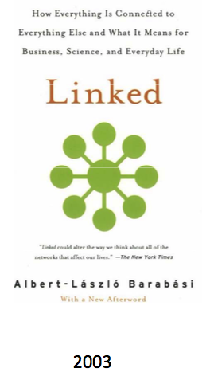
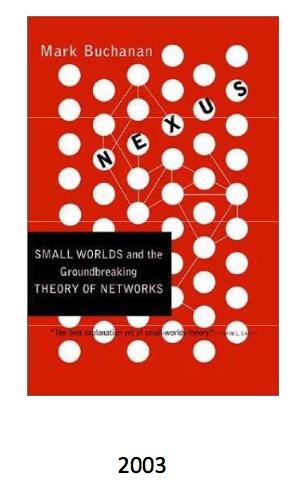
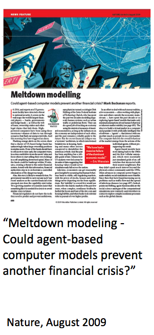
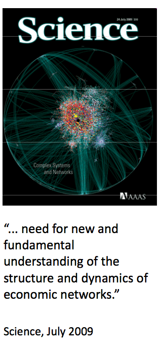

Created by Xuhu Wan / @tigerwan2008
 
 
In the face of the crisis, we felt abandoned by conventional tools. In the absence of guidance from existing analytical frameworks, policy-makers had to place particular reliance on our experience.
Jean-Claude Trichet,2010
Bech, M.L. and Atalay, E. (2008), “The Topology of the Federal Funds Market”.
Iori G, G de Masi, O Precup, G Gabbi and G Caldarelli (2008): “A network analysis of the Italian overnight money market”
Tapio Heimoa etc (2007)"Spectral and network methods in the analysis of correlation matrices of stock returns"
pip install networkx